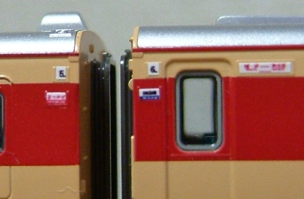
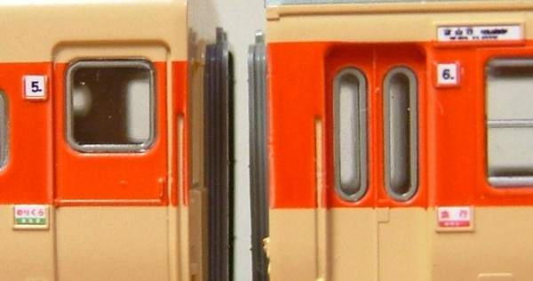
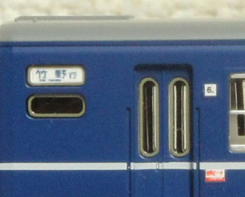
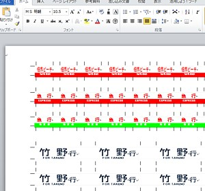

買ってきたパーツではありませんが、インクジェットプリンタとラベルで作った自作のサボです。
サードパーティからの市販品もたくさん出ていますが、実物のほうがバラエティに富んでいてほしいものはなかなかないもの。
それに、欲しいものがあっても今度は車両のほうがサボ受けのサイズがまちまちで結局合わなかったりします。
自作できれば、欲しいデザインとサイズのものが手に入るわけで。
|  |
キハ82好きな山陰の「まつかぜ」です。 博多⇔新大阪 (山陰本線経由)。山陰本線経由がまったく読めないのはご愛嬌として、 このサイズで博多と新大阪が読めるとは思っていませんでした。 |
|  |
キハ58は「のりくら」としています。 「のりくら/指定席」などは自作でないと作れないサボですね。 行き先は富山行(高山経由)です。こちらも "富山行" までは読むことができびっくり。 |
|  |
12系但馬ビーチ号。「但馬ビーチ」の種別札とか、「竹野行」の方向幕は自作ならでは (さすがにこんなの製品化されないでしょう。。。) |
セルの横幅・縦幅をサボっぽく調整して中に文字を書いてゆきます。コピーや参照が容易なので、お手軽に量産できます。 反面デザインの自由度はいまいちで、文字の縦横幅の調整ができない、文字が重ねられない等の難点がありかなりの制約があります。 ただ、種別板やくらいならある程度使える、という感じでしょうか。
あと、Excelなので印刷が見た目通りにならないという最大の難点があり、印刷時にかなりの調整を強いられます。 私は最終的にWordに移行しました。
↓キハ82用ツール->オプションの、"色"タブで、色も調整可能です。が標準の朱色で十分かと。
Wordのオートシェイプでひたすら作図します。文字の縦横比も調整可能です。
逆に難点は画面上での量産が面倒なところで、とくにたくさん作っちゃうとサイズの修正は地獄。
私は最近こちらに移行しており、作例はわずかですが12系の方向幕はなかなのできかと(自画自賛)

こんな感じになります。
スケール感がわかる写真を。黒い物体は0.5mmシャーペンの芯です。
プリンタと視力とデジカメの限界に挑戦、という感じです。 使っているデジカメの接写では、もはや解像度に追いついてません。
実際に制作し、私が貼り付けている作例をご紹介します。 フォントは 国鉄方向幕フォント を使ってるのでそのインストールが必要です。
Excelでの作例です。
ファイルを解凍してExcelで開き、20%縮小印刷でご使用ください。Wordでの作例です。
ファイルを解凍してWordで開き、20%縮小印刷でご使用ください。